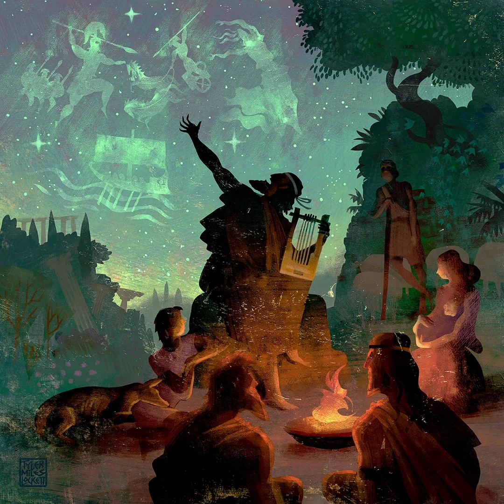
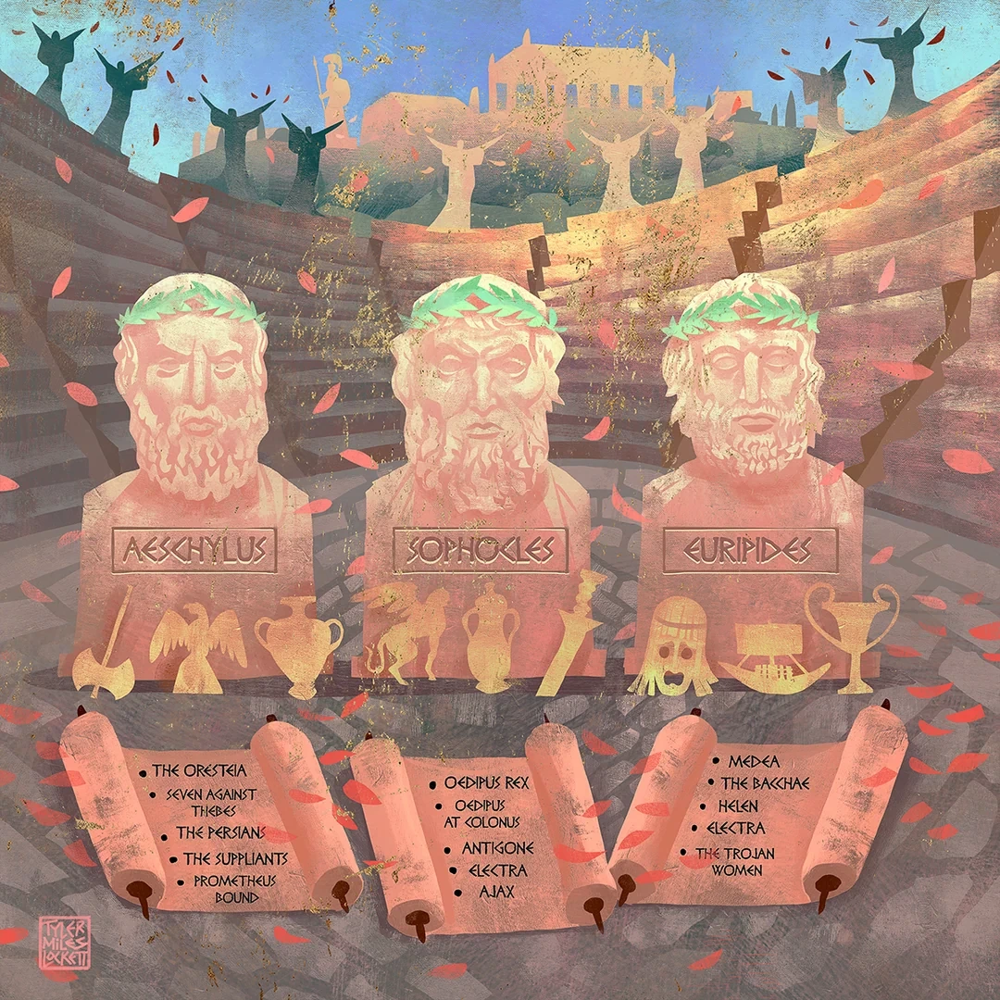

Эта лекция не является обязательной к изучению, но полезна для общего развития))
Из приоткрытой двери подсобки выплыла внушительная стопка книг, за которой следовали несколько свитков и небольшой глиняный сосуд. Кассия шла следом, направляя всю эту компанию палочкой, и время от времени поправляла один совсем уж непослушный свиток, который норовил развернуться прямо в воздухе. Добравшись до преподавательского стола, девушка осторожно опустила свою ношу, выровняла книги и с удовольствием оглядела получившуюся выставку. Кабинет постепенно обзаводился собственными сокровищами, и свободных мест на полках становилось всё меньше.
— Добрый день, ласточки мои! Сегодня я принесла вам несколько тысяч лет человеческой памяти. Правда, большая её часть поместилась в несколько книг и один сосуд, но не будем придираться к размерам. Древним грекам, между прочим, потребовались столетия, чтобы всё это до нас добралось, а я управилась за пять минут. Разумеется, с помощью магии, но им-то кто мешал?
Кассия улыбнулась, взяла верхнюю книгу и раскрыла её приблизительно посередине. На обложке красовалось имя Гомера, а страницы были заполнены длинными стихотворными строками.
— На первой лекции мы уже говорили о том, что древние греки оставили нам разные версии одних и тех же историй. Но ведь откуда-то мы вообще о них узнали! За последние три тысячи лет исчезли целые государства, разрушились города, изменились языки, а Зевс до сих пор исправно изменяет Гере на страницах современных сборников. Вот уж кому действительно удалось сохранить репутацию! Но самим мифам повезло далеко не одинаково: одни произведения дошли до нас целиком, от других остались лишь отдельные строки, а о некоторых мы знаем только благодаря чужим пересказам.
Многие греческие мифы существовали ещё до того, как их записали. Люди передавали истории друг другу, рассказывали детям, исполняли на праздниках и пирах, а некоторые занимались подобными выступлениями профессионально. Таких певцов называли аэдами; они исполняли эпические песни, нередко сопровождая себя игрой на струнном инструменте. Позднее широкую известность получили рапсоды, выступавшие перед публикой с поэтическими произведениями. И представьте, какая работа стояла перед человеком, которому требовалось удерживать в памяти длинную историю с многочисленными героями, сражениями, путешествиями и совершенно невероятными родословными! Исполнителям помогали особые приёмы стихотворной речи: повторяющиеся выражения и постоянные определения героев. Поэтому Ахилл у Гомера постоянно быстроногий, Афина — совоокая, а Одиссей — многохитростный. Такие сочетания помогали складывать стихи и делали персонажей узнаваемыми, однако устное исполнение не обязательно означало дословное повторение одного и того же текста. Рассказчики могли по-разному развивать отдельные эпизоды, а некоторые подробности со временем менялись. Примерно в VIII веке до нашей эры у греков появилась алфавитная письменность, но это вовсе не означало, что все немедленно перестали слушать певцов и принялись читать свитки. Истории продолжали рассказывать и исполнять перед слушателями, даже когда некоторые произведения уже существовали в письменном виде.

С этим миром поэзии связано имя Гомера, которому древние греки приписывали создание «Илиады» и «Одиссеи». Обе поэмы обычно относят к VIII–VII векам до нашей эры, хотя обстоятельства их возникновения до сих пор вызывают споры. О самом Гомере достоверно известно крайне мало, и исследователи даже не могут с полной уверенностью сказать, были ли обе поэмы созданы одним человеком. Зато произведения эти пользовались огромной известностью: их исполняли, изучали, цитировали, а истории Ахилла, Гектора и Одиссея знали многие поколения греков. Правда, здесь современного читателя может поджидать небольшое разочарование. Представьте, что вы решили познакомиться с Троянской войной, раздобыли огромную «Илиаду», приготовились читать о знаменитом деревянном коне и разрушении Трои, а затем добрались до последней страницы и обнаружили, что город всё ещё стоит. Дело в том, что «Илиада» посвящена сравнительно небольшому отрезку последнего периода осады, прежде всего гневу Ахилла и его последствиям. «Одиссея» же рассказывает о возвращении Одиссея домой после войны. Поэтому за полной историей троянских событий придётся обращаться и к другим произведениям.
Такие произведения действительно существовали. Помимо гомеровских поэм, были «Киприи», «Эфиопида», «Малая Илиада», «Разрушение Илиона» и другие сочинения, относимые к эпическому циклу. В них рассказывалось о причинах войны, последних сражениях, гибели Ахилла, взятии города и возвращении героев домой. Вот только большинство этих поэм не сохранилось целиком: их содержание известно благодаря отдельным отрывкам, упоминаниям и позднейшим пересказам. Например, мы знаем, что в «Эфиопиде» рассказывалось об участии амазонки Пентесилеи и Мемнона в Троянской войне, а также о гибели Ахилла, но прочитать само произведение сегодня уже не можем. Представьте, что через тысячу лет кто-нибудь найдёт краткое содержание вашей любимой книги. Герои познакомились, поссорились, пережили несколько приключений, а потом помирились. Основные события на месте, но куда делись их разговоры, переживания, смешные подробности и вообще всё то, за что вы любили эту историю? С некоторыми античными произведениями получилось примерно так же. И нам ещё повезло, если кто-нибудь вообще потрудился записать их содержание.
Рядом с Гомером обычно называют другого древнего поэта — Гесиода, жившего приблизительно в конце VIII — начале VII века до нашей эры. Его «Теогония» посвящена происхождению мира и божественных поколений; именно благодаря ей мы подробно знакомы с историей Геи, Урана, Кроноса и прихода Зевса к власти. Другое произведение, «Труды и дни», рассказывает преимущественно о человеческой жизни, труде и справедливости, но содержит и мифологические сюжеты, в том числе историю Пандоры. Кстати, у Гесиода Пандора открывает вовсе не ящик, как принято говорить сегодня; знаменитое выражение распространилось значительно позднее. Впрочем, мифы сохранились не только в больших поэмах. Существовали также Гомеровские гимны — стихотворные обращения к богам, созданные разными авторами в разные времена. Некоторые совсем короткие, зато другие содержат полноценные истории. Например, гимн к Деметре рассказывает о похищении Персефоны и поисках дочери, а гимн к Гермесу — о боге, который едва успел родиться, но уже отправился воровать коров Аполлона. Очень деятельный младенец, ничего не скажешь! При этом гимны могли быть связаны с почитанием богов: так, рассказ о Деметре отсылает нас к Элевсину, где находилось знаменитое святилище и проводились мистерии в честь богини и её дочери.
Кассия отложила книгу, позволив студентам закончить записи, и с улыбкой оглядела аудиторию.
— Если вам кажется, что древние греки только и делали, что сочиняли длинные стихи, спешу обрадовать: они ещё и очень любили театр. Правда, весёлых историй там тоже хватало не всегда. Иногда складывается впечатление, что афиняне специально приходили посмотреть, как очередная семья уничтожает саму себя.
В Афинах V века до нашей эры театральные представления были важной частью праздников, посвящённых Дионису. Среди знаменитых трагических поэтов были Эсхил, Софокл и Еврипид, чьи произведения нередко основывались на известных мифах. Драматурги выбирали отдельные события, по-своему расставляли акценты и уделяли больше внимания определённым персонажам. Например, Эсхил в «Орестее» обращался к убийству Агамемнона и мести его сына Ореста, а Софокл в «Царе Эдипе» показывал, как правитель Фив постепенно узнаёт страшную правду о собственном прошлом. Зрители зачастую заранее знали, чем закончится история, но приходили посмотреть, как именно её представит автор. Благодаря сохранившимся трагедиям мы можем узнать не только мифологические сюжеты, но и то, какие вопросы волновали древних драматургов: справедливость мести, ответственность за поступки, человеческая воля и судьба. К сожалению, большая часть пьес, которые когда-то показывали на греческой сцене, исчезла. Иногда всё, что осталось от произведения, собиравшего полные театры, — название или несколько случайно процитированных строк.

Покончив с книгами, Кассия осторожно подняла глиняный сосуд. Его бока украшали небольшие фигуры людей и животных, а после взмаха палочки изображение увеличилось настолько, чтобы его могли рассмотреть даже с последних парт.
— А теперь посмотрите сюда. Древние греки оставили нам мифы не только в книгах. Некоторые истории они буквально рисовали на посуде! Представьте, что вы покупаете сосуд для вина или масла, а на нём Геракл душит льва, Персей расправляется с Медузой или Ахилл преследует очередного несчастного троянца. Весьма приятное украшение для домашнего хозяйства!
Древнегреческая вазопись сохранила множество изображений богов, героев и мифологических существ. Иногда художники подписывали имена персонажей, а иногда исследователям приходится узнавать их по характерным предметам и обстоятельствам происходящего. Например, Геракла часто изображали с палицей и львиной шкурой, а Афину — в вооружении. Но на древних сосудах встречаются и такие сцены, о которых сохранившиеся произведения нам ничего не рассказывают. Например, около двух с половиной тысяч лет назад афинский художник Эксекий расписал амфору, изобразив на ней двух героев Троянской войны — Ахилла и Аякса. Оба прославились как могучие воины, однако художник показал их вовсе не на поле сражения. Герои сидят друг напротив друга и играют в настольную игру, причём Эксекий даже подписал их имена и указал, сколько очков выпало каждому: Ахиллу четыре, а Аяксу три. Представляете, прошло столько столетий, а мы до сих пор знаем результат их партии! В «Илиаде» Гомера такого эпизода нет, и мы не знаем, существовал ли когда-нибудь отдельный рассказ об этой игре или художник придумал сцену самостоятельно. Зато благодаря сохранившейся амфоре можем увидеть, как древние греки представляли своих героев не только во время сражений. Конечно, далеко не каждое изображение удаётся объяснить настолько подробно, и не всякая древняя статуя или монета обязательно рассказывает какой-нибудь миф. Некоторые находки помогают нам узнать, как греки почитали богов, какие обряды проводили и чем отличалась жизнь в разных городах.
— А теперь представьте, что какая-нибудь история была известна только жителям небольшого города и не заинтересовала ни Гомера, ни Гесиода, ни знаменитых драматургов. Неужели ей обязательно было исчезнуть? К счастью, нет. Иногда на помощь приходили люди, которым просто нравилось путешествовать и записывать всякие интересные вещи. Например, Павсаний.
Павсаний жил во II веке нашей эры и оставил произведение под названием «Описание Эллады». Он путешествовал по греческим землям, посещал святилища, осматривал памятники и записывал рассказы, которые слышал от жителей разных городов. Например, он сообщает о камне в Дельфах, который жители считали тем самым, что Кронос проглотил вместо маленького Зевса. Камень почитали, ежедневно поливали маслом, а во время праздников покрывали необработанной шерстью. Разумеется, доказать, что перед путешественником находился настоящий камень из истории о Кроносе, мы не можем, зато можем узнать, во что верили и какие рассказы сохраняли жители Дельф в его время. Кроме путешественников, существовали авторы, специально собиравшие мифы, — мифографы. Одно из самых известных подобных произведений — «Мифологическая библиотека», автор которой теперь известен как Псевдо-Аполлодор. В ней собраны родословные богов, истории героев и большие мифологические циклы, причём иногда приводятся сразу несколько версий одного события. Благодаря таким сочинениям до нас дошло множество подробностей, отсутствующих в других сохранившихся произведениях.
Кассия переложила несколько книг и вытащила из-под них пожелтевший пергамент.
— Но ведь всё это ещё нужно было каким-то образом сохранить! Древние произведения не могли просто взять и перенестись в современную библиотеку. Кто-то должен был их хранить и переписывать, а иногда ещё и спасать от пожаров, сырости и других неприятностей.
В античности книги часто представляли собой свитки из папируса, позднее распространялись пергамент и кодексы, уже больше похожие на знакомые нам книги со страницами. Однако ни один материал не мог храниться вечно. Рукописи повреждались, погибали во время войн и пожаров, страдали от сырости и времени. К тому же новые экземпляры создавались вручную, поэтому сохранность произведения во многом зависела от того, продолжали ли люди его читать и переписывать. Если текст пользовался популярностью, у него было больше шансов пережить столетия; если интерес исчезал, старые экземпляры постепенно разрушались, а новые могли больше не появиться. При переписывании, конечно, случались ошибки: пропущенные слова, перепутанные имена, повторённые строки. Поэтому современные исследователи сравнивают разные рукописи одного произведения, стараясь восстановить его текст. Иногда помогают древние комментарии, или схолии, где объяснялись сложные места известных сочинений и цитировались другие, ныне утраченные тексты. А порой настоящими сокровищами становятся археологические находки. Например, в египетском Оксиринхе обнаружили огромное количество папирусов, среди которых оказались фрагменты литературных произведений, прежде считавшихся утраченными. Сухой климат помог сохранить материалы, которые в других условиях давно бы разрушились.
— Вы только представьте радость человека, который находит папирус с неизвестным произведением древнего автора, — Кассия развернула принесённый лист, исписанный отдельными словами с большими промежутками между ними. — А потом выясняется, что сохранилось полторы строчки, половина имени и какая-нибудь совершенно непонятная фраза. И вот приходится сидеть и выяснять, что именно хотел сказать человек две тысячи лет назад.
Даже после обнаружения древней рукописи работа с ней не заканчивается: текст необходимо прочитать, изучить, сравнить с другими свидетельствами и перевести. Но греческие мифы дошли до нас не только благодаря самим грекам. Их использовали и перерабатывали римские писатели, позднейшие европейские поэты и художники. Большое влияние на наше представление об античной мифологии оказал Овидий, римский поэт, живший на рубеже I века до нашей эры и I века нашей эры. Его «Метаморфозы» объединяют множество историй о превращениях богов, людей и фантастических существ. В этом произведении мы находим рассказы о Нарциссе, Арахне, Дафне и Пигмалионе, ставшие впоследствии широко известными. Некоторые сюжеты существовали задолго до Овидия, но поэт придавал им собственную литературную форму, а порой сохранял подробности, неизвестные нам по более ранним текстам. Например, рассказ об Арахне, состязавшейся в ткачестве с Минервой и превращённой в паука, дошёл до нас в своём наиболее известном изложении благодаря ему. Получается любопытная вещь: современный читатель открывает сборник древнегреческих мифов и встречает рядом истории Гомера, Гесиода и Овидия, хотя последний принадлежит уже римской литературе, а между их произведениями лежат многие столетия.
Со временем античные сюжеты продолжили появляться в живописи, литературе и театре. Вспомните хотя бы «Рождение Венеры» Сандро Боттичелли, которое мы рассматривали на первой лекции. Художник создал картину в XV веке, обращаясь к античным образам и искусству собственной эпохи, поэтому его знаменитая Венера на раковине вовсе не повторяет во всех подробностях рассказ Гесиода. Позднее появились и современные сборники мифов, рассчитанные на широкую публику. Один из самых известных — «Легенды и мифы Древней Греции» Николая Куна, благодаря которому многие впервые познакомились с греческими богами и героями. Кун использовал античные источники, перерабатывал их и выстраивал истории в удобную для чтения последовательность. Такие книги действительно помогают познакомиться с мифологией, не заставляя человека сразу обращаться к десяткам древних произведений. При этом современный пересказ не следует принимать за античный первоисточник: прежде чем история оказалась на его страницах, её могли столетиями рассказывать, записывать, переписывать и переводить. Иногда от древнего произведения оставались лишь отдельные фрагменты, а порой его содержание было известно только благодаря другому автору.
Кассия закрыла последнюю книгу и поставила её на полку, после чего осторожно пристроила рядом глиняный сосуд. Некоторое время девушка оценивала получившуюся композицию и, убедившись, что ничего не собирается упасть, повернулась к студентам.
— Думаю, этим книгам здесь будет хорошо. А когда-нибудь у нас появятся и другие интересные вещи. Только сразу предупреждаю: если кто-нибудь решит подарить кабинету настоящую древнегреческую вазу, я совершенно не возражаю. Можете даже не спрашивать разрешения!
Она махнула палочкой, и оставшиеся на столе пергаменты самостоятельно свернулись, после чего отправились на свои места.
— Ну вот, теперь всё на местах. Домашние задания на ваших столах, а пока можете рассмотреть книги и изображения поближе. Только вазу, пожалуйста, не трогайте без меня. Я ещё не успела придумать, кому выставить счёт, если она разобьётся. Хотя, если что, будем собирать всем Хогвартсом! Ладно, шучу, пожертвования пока не принимаю. До встречи, ласточки!